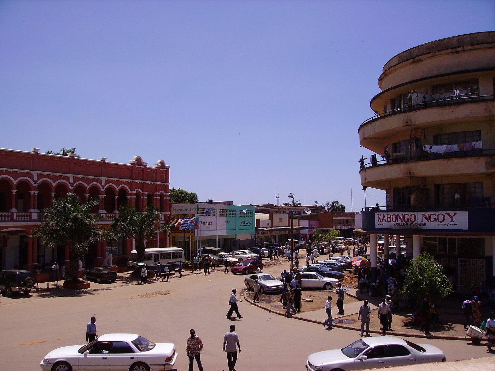

Nous contacter
Trois bureaux et un numéro vert. Les bureaux communautaires reçoivent sans rendez-vous du lundi au vendredi.
Bureaux
Siège · KolweziAvenue Lumumba, Kolwezi, Lualaba+243 97 000 00 00
Bureau de LubumbashiAvenue Sendwe, Lubumbashi, Haut-Katanga+243 97 000 00 01
Bureau communautaire · KandoVillage de Kando, en face de l'école0 800 00 12 12
Numéro vert plaintes et signalements
0 800 00 12 12
Gratuit depuis tous les réseaux, du lundi au samedi de 7 h à 19 h. WhatsApp 24 h/24.
WhatsApp +243 97 000 00 12 · Mécanisme de plaintes et de signalements
contact@kando-ressources.example · presse@kando-ressources.example · investisseurs@kando-ressources.example